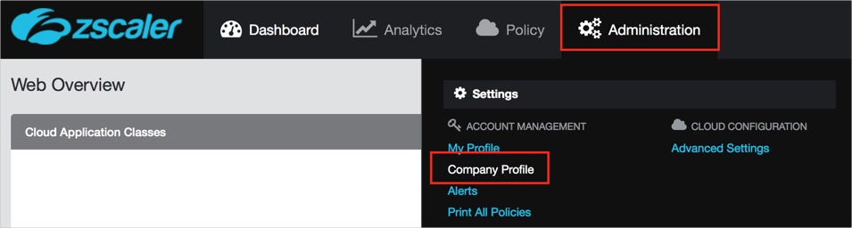
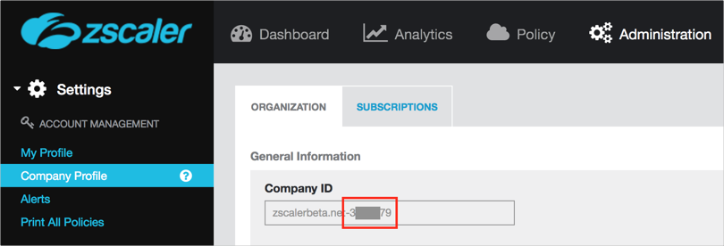
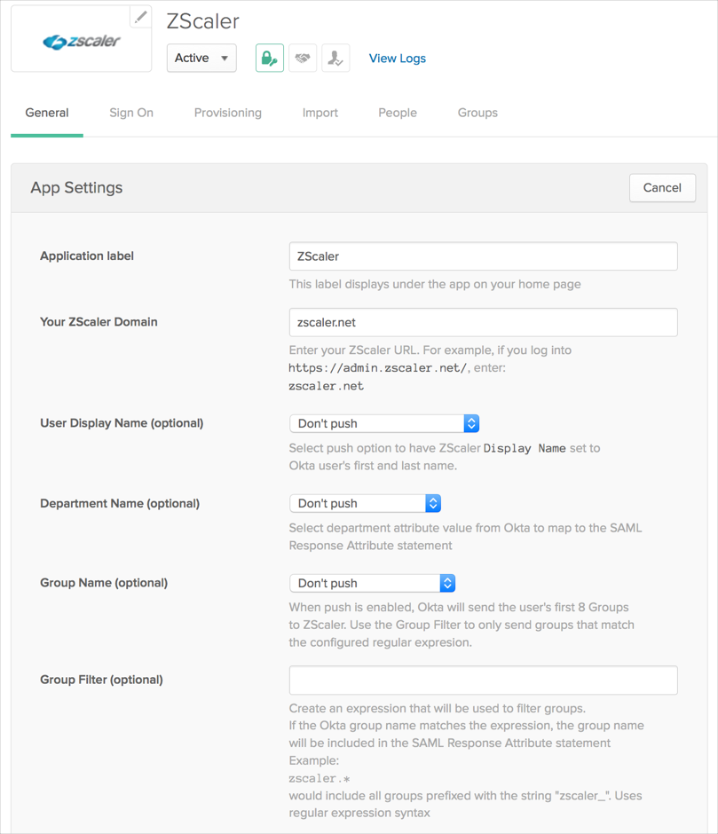
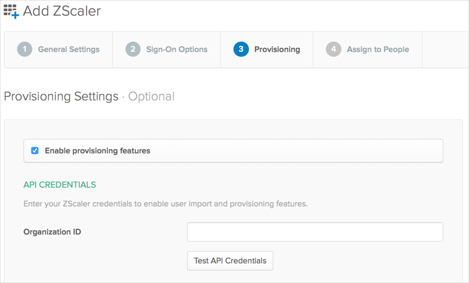
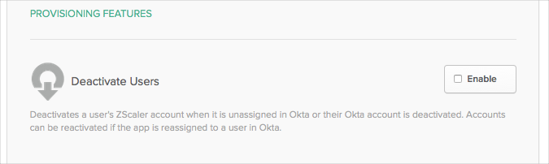

This guide provides the steps required to configure Provisioning for ZScaler.
Important:
User Management integration is available only for ZScaler accounts with configured SAML integration.
ZScaler provisioning is not a true provisioning integration since create/update user action is done via SAML login request and only delete user action is done via Okta provisioning module. If you want to make use of the create, and update user functionality, you are required to enable SAML for the ZScaler application.
The following provisioning features are supported:
Push New Users
New users created through OKTA will also be created in the third party application. Done via SAML login request.
Push Profile Updates
Updates made to the user's profile through OKTA will be pushed to the third party application. Done via SAML request.
Push User Deactivation
Deactivating the user or disabling the user's access to the application through OKTA will deactivate the user in the third party application. Done via provisioning module.
Before you configure provisioning for ZScaler you need to obtain an Organization ID, as follows:
Login into your ZScaler account.
Navigate to the Administration > Company Profile page:

Locate the Company ID field, and make a copy of the digital part of the value, as shown below, you will need to enter it into Okta:

Before you configure provisioning, make sure you have added the ZScaler app, and have configured the General Settings and Sign On options properly, as described below:
Navigate to Admin > Add Application.
Locate the ZScaler application and add it. If you cannot find the application, contact OKTA support to add it to your organization.
Select the General Settings tab, then click Edit and enter the following:
Your ZScaler Domain: Provide your ZScaler domain.
User Display Name (optional): Select the push option to have ZScaler Display Name set to Okta user's first and last name.
Department Name (optional): Select the department attribute value from Okta to map to the SAML Response Attribute statement.
Group Name (optional): When push is enabled, Okta will send the user's groups to ZScaler (up to 128 items). Use the Group Filter to only send groups that match the configured regular expression.
Group Filter (optional): Create an expression that will be used to filter groups. If the Okta Group Name matches the expression, the group name will be included in the SAML Response Attribute statement,
For Example:
zscaler.*
Would include all groups prefixed with the string zscaler. Uses regular expression syntax.

Click Next to proceed to the Sign-On Options tab. Here no specific options are available.
Click Next to proceed to the Provisioning tab. See below for Provisioning Configuration Steps.
Configure your Provisioning settings for Zscaler as follows:
Check the Enable provisioning features box.
Under API Credentials enter the Company ID value you copied from ZScaler (see Requirements) into the Organization ID field:

Scroll down and enable the Provisioning Features you want to use for this app:

Click Next to proceed to the Import Users tab.
Assign people to the app, if needed, then click Finish to complete provisioning configuration.
ZScaler does not support User Schema Discovery.